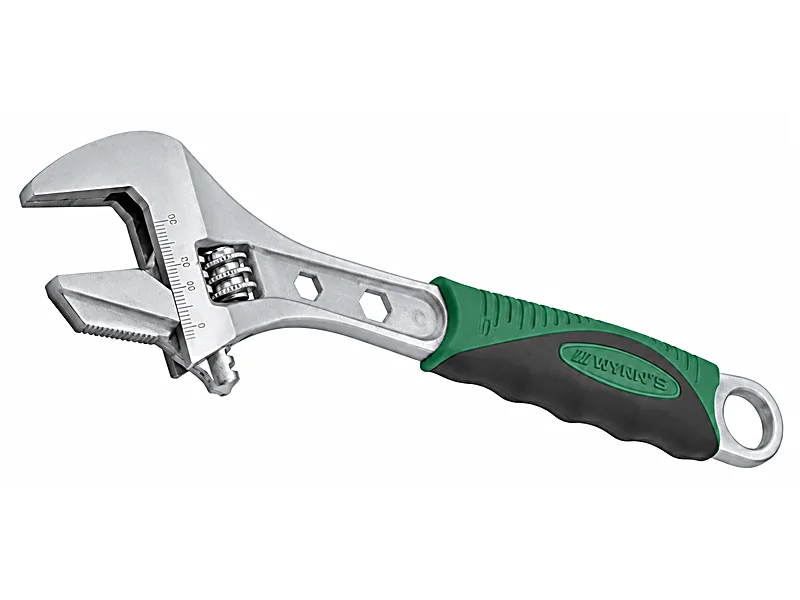
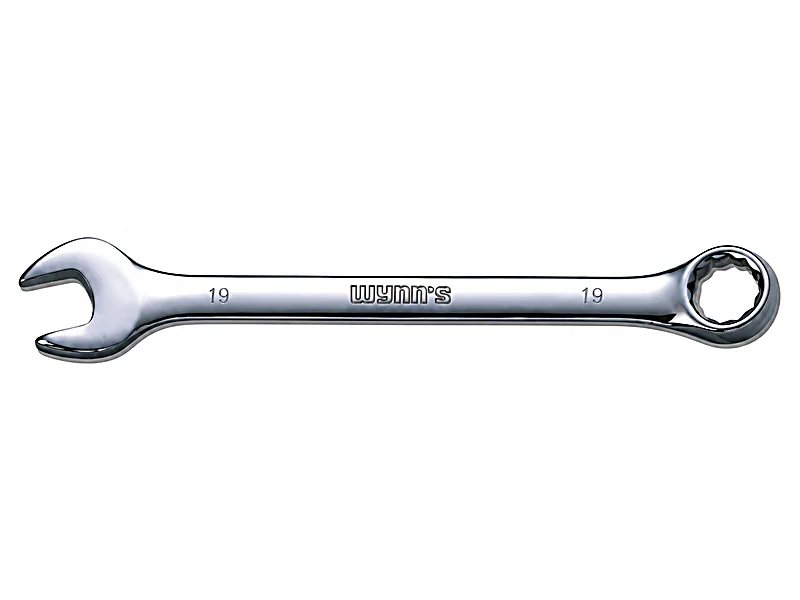
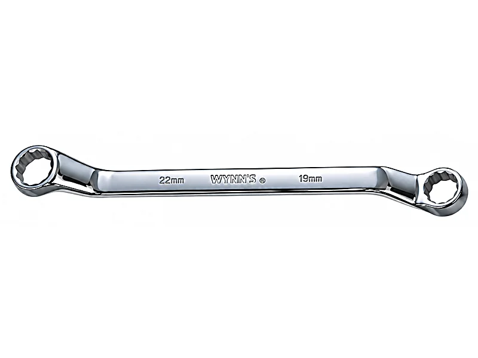
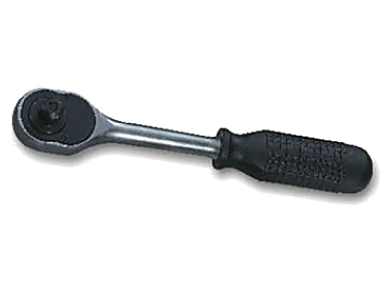

ประแจแต่ละแบบใช้ต่างกันยังไง เลือกให้ตรงงาน
ประแจที่ขายในร้านเครื่องมือมีหลายแบบ และแต่ละแบบเหมาะกับงานไม่เหมือนกัน ถ้าเลือกผิด นอกจากขันไม่ถนัดแล้ว ยังทำให้หัวน็อตรูดได้ด้วย บทความนี้สรุปประแจแต่ละแบบที่มีในแคตตาล็อก WYNNTOOLS ว่าใช้ทำอะไร เลือกยังไงตามงาน และควรเริ่มจากชุดไหน
ประแจ 6 แบบที่ใช้บ่อย
ประแจเลื่อน: อันเดียวใช้ได้หลายขนาด
หมุนเกลียวปรับความกว้างปากได้ อันเดียวใช้กับน็อตได้หลายขนาด เหมาะพกติดตัวหรือใช้งานทั่วไปในบ้าน ข้อเสียคือปากมีระยะคลอนเล็กน้อย ถ้าออกแรงมากกับน็อตที่แน่นจัด ปากอาจลื่นจนหัวน็อตรูด ก่อนขันให้ปรับปากให้แนบหัวน็อตพอดีทุกครั้ง
ประแจปากตายแหวนข้าง: ใช้คล่องที่สุด
ข้างหนึ่งเป็นปากตาย อีกข้างเป็นแหวนขนาดเดียวกัน ใช้ปากตายสวมน็อตเร็ว ๆ แล้วใช้ข้างแหวนตอนต้องออกแรงคลายหรือขันให้แน่น เพราะแหวนโอบหัวน็อตรอบด้าน ประแจรุ่นนี้ในแคตตาล็อก WYNNTOOLS ทำจากเหล็ก CR-V และข้างแหวนเอียง 15°
ประแจแหวนคู่: เมื่อต้องออกแรงมาก
แหวนทั้งสองข้างคนละขนาด เช่น 8x10 มม. แหวนจับหัวน็อตรอบด้านจึงลื่นยากกว่าปากตาย เหมาะกับน็อตที่แน่นมากหรือหัวเริ่มมน รุ่นในแคตตาล็อกแหวนทั้งสองข้างเอียง 75° เพื่อให้ใช้งานสะดวก
ประแจแหวนฟรี: ขันต่อเนื่องไม่ต้องยกออก
ข้างแหวนมีเฟืองฟรี ขันต่อเนื่องได้โดยไม่ต้องถอดประแจออกจากหัวน็อตทุกครั้ง ช่วยมากกับน็อตที่ต้องหมุนหลายรอบหรืออยู่ในที่แคบ ในแคตตาล็อกมีทั้งแหวนฟรี 72 เฟือง และประแจล็อก 2 ข้าง 12 เหลี่ยมแบบคอพับได้
ลูกบล็อกกับด้ามบล็อก: ชุดสำหรับงานรถและงานช่าง
เปลี่ยนลูกบล็อกตามขนาดน็อต แล้วใช้ด้ามบล็อกฟรีขันต่อเนื่อง ต้องเลือกลูกบล็อกให้ขนาดแกนตรงกับด้าม เช่น แกน 1/2 นิ้ว (4 หุน) หรือ 3/8 นิ้ว (3 หุน) ด้ามบล็อกฟรี 1/2 นิ้วในแคตตาล็อกใช้เฟือง 24 ฟัน ตัวด้ามกะทัดรัด และปรับหมุนซ้าย-ขวาได้
ประแจหกเหลี่ยมและทอร์ค: สำหรับสกรูหัวจม
ใช้กับสกรูที่มีรูหกเหลี่ยมหรือรูรูปดาวที่หัว พบบ่อยในเฟอร์นิเจอร์ประกอบเอง จักรยาน และเครื่องจักร แบบหัวบอลเสียบเข้ารูแบบเอียงได้ ชุดหัวบอลรุ่นหนึ่งในแคตตาล็อกเอียงได้ 25° ช่วยในจุดที่เข้าตรง ๆ ไม่ได้




เลือกตามงาน
| งาน | ประแจที่เหมาะ | เหตุผล |
|---|---|---|
| ซ่อมของในบ้านทั่วไป | ประแจเลื่อน 1 อัน และประแจหกเหลี่ยม 1 ชุด | ประแจเลื่อนอันเดียวใช้ได้หลายขนาด ส่วนประแจหกเหลี่ยมใช้กับเฟอร์นิเจอร์ประกอบเอง |
| ซ่อมรถ มอเตอร์ไซค์ | ลูกบล็อกกับด้ามบล็อกฟรี และชุดประแจปากตายแหวนข้าง | น็อตหลายขนาดในงานเดียว ลูกบล็อกกับด้ามฟรีขันได้เร็วและต่อเนื่อง |
| น็อตแน่นมาก หรือหัวเริ่มมน | ประแจแหวนคู่ หรือใช้ข้างแหวนของประแจปากตายแหวนข้าง | แหวนโอบหัวน็อตรอบด้าน ลื่นยากกว่าปากตายและประแจเลื่อน |
| น็อตที่ต้องหมุนหลายรอบ หรืออยู่ในที่แคบ | ประแจแหวนฟรี | ขันต่อเนื่องได้โดยไม่ต้องยกประแจออกจากหัวน็อต |
| ท่อประปา ของทรงกลม | ประแจจับท่อ หรือประแจเลื่อนรุ่นปากสลับจับท่อ | ปากมีฟันจับผิวท่อกลมได้ ซึ่งประแจทั่วไปจับไม่อยู่ |
| ก๊อกและอุปกรณ์ในห้องน้ำ | ประแจเลื่อนด้ามสั้น WNS200J | แคตตาล็อกระบุว่าเหมาะกับงานอุปกรณ์ในห้องน้ำ ไม่ทำให้ผิวชิ้นงาน เช่น น็อตเคลือบสีทอง เป็นรอย |
เริ่มชุดแรกยังไงดี
ถ้ายังไม่มีประแจเลย เริ่มจากสามอย่าง คือ ประแจเลื่อนขนาดกลางหนึ่งอัน ชุดประแจปากตายแหวนข้าง และประแจหกเหลี่ยมหนึ่งชุด แค่นี้ก็ครอบคลุมงานส่วนใหญ่ในบ้านแล้ว ขนาดของประแจเลื่อนเรียกตามความยาวด้าม เช่น 8 นิ้ว หรือ 200 มม.
ในแคตตาล็อกมีชุดประแจปากตายแหวนข้างตั้งแต่ 6 ถึง 14 ชิ้น และมีประแจเลื่อนรมดำตรา M.T.T. ซึ่งเป็นแบรนด์ของร้านเอง ถ้าใช้งานกับรถด้วย ค่อยเพิ่มลูกบล็อกกับด้ามบล็อกฟรีทีหลัง
สำหรับร้านค้าที่ซื้อไปขายต่อ
ตารางในหน้าแคตตาล็อกมีคอลัมน์ "จำนวน/ลัง" เช่น 6/60 หมายถึงแพ็กละ 6 ชิ้น ลังละ 60 ชิ้น ราคาปลีกและราคาส่งไม่ได้ประกาศในเว็บ ส่งรหัสสินค้ามาทาง LINE แล้วทางร้านแจ้งราคาให้
คำถามที่ถามกันบ่อย
ประแจเลื่อนกับประแจปากตายต่างกันยังไง
ประแจเลื่อนปรับขนาดปากได้ อันเดียวใช้ได้หลายขนาดแต่ปากมีระยะคลอน ส่วนประแจปากตายมีขนาดตายตัว ต้องมีหลายอันให้ครบขนาด แต่จับหัวน็อตได้แน่นกว่า
ประแจแหวนกับประแจปากตาย อันไหนดีกว่า
ประแจแหวนโอบหัวน็อตรอบด้าน ลื่นยาก เหมาะตอนต้องออกแรงมาก ส่วนปากตายสวมเข้าออกได้เร็ว และใช้ในจุดที่สวมแหวนจากด้านบนไม่ได้ ประแจปากตายแหวนข้างจึงมีทั้งสองแบบในอันเดียว
CR-V คืออะไร
คือเหล็กกล้าผสมโครเมียมและวาเนเดียม (Chromium-Vanadium) นิยมใช้ทำประแจและลูกบล็อก เพราะแข็งแรงและทนการสึกหรอ
ลูกบล็อก 4 หุน คือขนาดไหน
4 หุน คือแกนสี่เหลี่ยมขนาด 1/2 นิ้ว ใช้กับด้ามบล็อก 1/2 นิ้ว ส่วน 3 หุน คือ 3/8 นิ้ว ขนาดแกนของลูกบล็อกกับด้ามต้องตรงกัน
ประแจ WYNNTOOLS ราคาเท่าไหร่
ราคาไม่ได้ประกาศในเว็บ ส่งรหัสสินค้าหรือรูปมาทาง LINE ทางร้านแจ้งราคาปลีกและราคาส่งให้
อ่านต่อ
หาประแจที่ต้องการไม่เจอ? ถามทาง LINE
บอกงานหรือขนาดน็อต ทีมงานสำเพ็งแนะนำรุ่นและแจ้งราคาให้